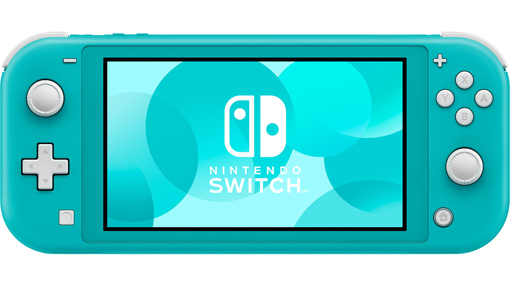

Meus jogos
Escolha um jogo para ver os detalhes.
- Jogos jogados
- —
- Jogos zerados
- —
Nenhum jogo encontrado.
Tente outro nome ou altere o filtro de status.
Apresentação
Os jogos que eu joguei e zerei, com nota e opinião sincera pra você decidir se compensa.

Nintendo Switch Lite · TurquesaEste é um site pessoal, feito por alguém que gosta de programação e de jogar jogos de diferentes gêneros. Recentemente adquiri um Switch Lite desbloqueado e quis aproveitar para conhecer vários jogos nele. Aqui reúno minhas análises e notas dos que joguei ou zerei, para ajudar quem está em dúvida se um título vale a pena. Escolhi o Lite por ser pequeno, portátil e atender ao que preciso, sem os recursos extras das outras versões. Como tenho um PS5 conectado à TV para jogar em tela grande, o dock também não faz falta.
Se algum jogo não estiver listado, é possível que eu o tenha jogado no PlayStation, que também uso. Obrigado pela compreensão.
Escolha um jogo para ver os detalhes.
Tente outro nome ou altere o filtro de status.